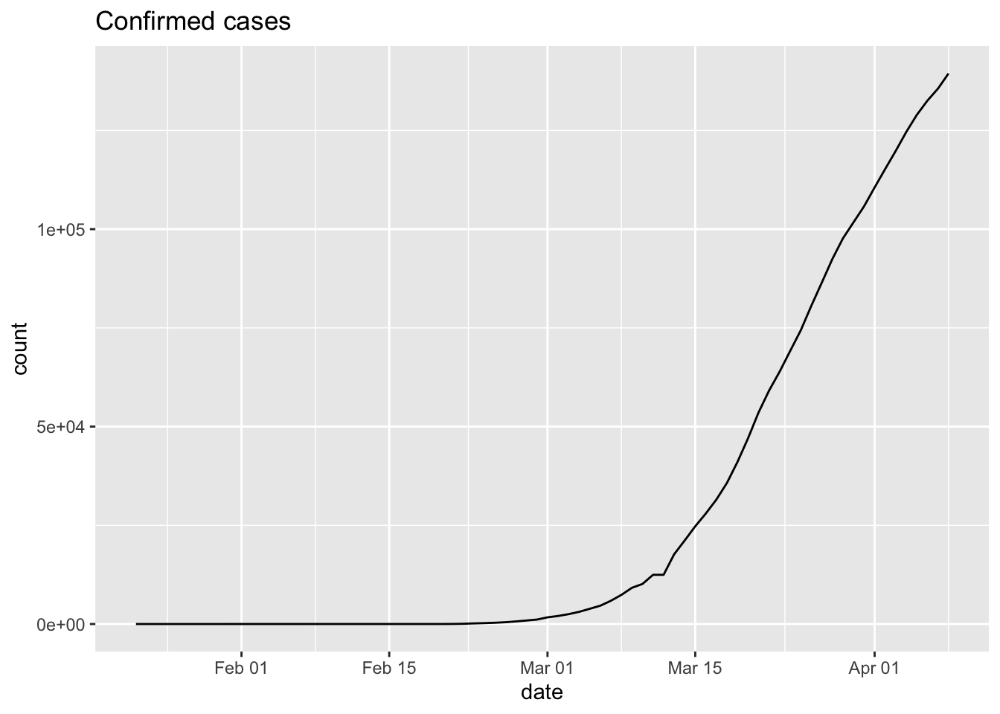

5 Use cases
5.1 Basic data exploration
In this section, we will be using a combination of [dplyr] and
[ggplot2] to explore the COVID-19 global data from JHU. For details on
this dataset, see the help using ?jhu_data.
The next line of code will do a (set of) network calls to fetch the most up-to-date dataset from the JHU github repository.
## # A tibble: 3 x 7
## ProvinceState CountryRegion Lat Long date count subset
## <chr> <chr> <dbl> <dbl> <date> <dbl> <chr>
## 1 <NA> Afghanistan 33 65 2020-01-22 0 confirmed
## 2 <NA> Afghanistan 33 65 2020-01-23 0 confirmed
## 3 <NA> Afghanistan 33 65 2020-01-24 0 confirmedWe now want to ask a series of questions about the dataset.
- How many records are in the dataset?
## [1] 60450- How many different countries are represented?
## [1] 184Most records have no listing for ProvinceState column. Let’s look at
a few of those to get an idea of what is there when not empty:
- What is in the
ProvinceStatecolumn?
To answer this question, we will be using dplyr, so some familiarity
with that package will be helpful to follow this code.
jhu %>%
dplyr::filter(!is.na(ProvinceState)) %>%
dplyr::select(ProvinceState, CountryRegion) %>%
unique() %>%
head(10)## # A tibble: 10 x 2
## ProvinceState CountryRegion
## <chr> <chr>
## 1 Australian Capital Territory Australia
## 2 New South Wales Australia
## 3 Northern Territory Australia
## 4 Queensland Australia
## 5 South Australia Australia
## 6 Tasmania Australia
## 7 Victoria Australia
## 8 Western Australia Australia
## 9 Alberta Canada
## 10 British Columbia CanadaWe still have not looked at the most valuable information, the date
and count columns in any detail.
- What is the current count of confirmed cases by country, ordered by highest count down?
There is a lot to unpack in the next code block, but the results are quite useful. We will use the DT package to make the dataset searchable and sortable.
library(DT)
latest_jhu_data = jhu %>%
dplyr::filter(subset=='confirmed' & is.na(ProvinceState)) %>%
dplyr::group_by(CountryRegion) %>%
dplyr::slice(which.max(date)) %>%
dplyr::arrange(desc(count))
DT::datatable(latest_jhu_data, rownames=FALSE)Note: I included a little is.na in the filtering above to remove
records where country data are split out over subparts. We revisit
this below.
The data here could be usefully displayed as a graph as well.
par(las=2, mar=c(8,5,5,1))
barplot(count ~ CountryRegion, xlab = '',
data=head(latest_jhu_data,10),
main='Confirmed cases, top 10 countries')
We note here that China is not shown. That is because we limited the data to only rows that had empty ProvinceState records. To add those records back in, we sum all the China rows (and those of other countries like Australia, etc.) by country and then perform similar work to produce a final plot.
latest_jhu_data = jhu %>%
dplyr::filter(subset=='confirmed') %>%
dplyr::select(-c(ProvinceState,Lat,Long)) %>%
dplyr::group_by(CountryRegion,date) %>%
dplyr::summarize(count = sum(count)) %>%
dplyr::slice(which.max(date)) %>%
dplyr::arrange(desc(count))
par(las=2, mar=c(8,5,5,1))
barplot(count ~ CountryRegion, xlab = '',
data=head(latest_jhu_data,10),
main='Confirmed cases, top 10 countries')
5.2 Visualize time series data
Up to now, we have ignored the time series aspects of the data and have sliced the dataset by country. In this section, we will be using dplyr and ggplot2 to visualize disease infection and deaths over time.
- How have the cases in Italy changed over time?
library(ggplot2)
italy_cc_ts = jhu %>%
dplyr::filter(CountryRegion == 'Italy' & subset=='confirmed')
ggplot(italy_cc_ts,aes(x=date, y=count)) +
geom_line() +
ggtitle('Confirmed cases') 
- How do the confirmed cases in China, US, Italy, Spain, Germany, and Russia compare over time?
We have to play the same game of summing all values by country and date. Here, we filter the countries to be in a list of countries.
countries_of_interest = c('China','US','Italy','Spain','Germany','Russia')
library(ggplot2)
cc_ts = jhu %>%
dplyr::group_by(CountryRegion,date) %>%
dplyr::filter(CountryRegion %in% countries_of_interest & subset=='confirmed') %>%
dplyr::summarize(count = sum(count))
head(cc_ts)## # A tibble: 6 x 3
## # Groups: CountryRegion [1]
## CountryRegion date count
## <chr> <date> <dbl>
## 1 China 2020-01-22 548
## 2 China 2020-01-23 643
## 3 China 2020-01-24 920
## 4 China 2020-01-25 1406
## 5 China 2020-01-26 2075
## 6 China 2020-01-27 2877To make the plot, we use the ggplot2 grouping and coloring to provide curves for each country on the same axis.
ggplot(cc_ts,aes(x=date, y=count, group=CountryRegion)) +
geom_line(aes(color=CountryRegion)) +
ggtitle('Confirmed cases') 
Changing to log scale can give a sense of the “exponentialness” of these data. Also, to remove zeros from the data (which cause problems when taking logs), we can filter data to include only values >=50. Note that ggplot2 will “do the right thing”.
cc_ts %>%
dplyr::filter(count>=50) %>%
ggplot(aes(x=date, y=count, group=CountryRegion)) +
geom_line(aes(color=CountryRegion)) +
ggtitle('Confirmed cases') +
scale_y_log10()
Consider the following questions based on the figure:
- What does the slope of the lines in this plot represent?
- What is the difference between China and other countries? What does this difference mean in terms of how the disease is spreading?
- What does each
- Pick an arbitrary level on the y-axis and look at the dates associated with each country’s curve with respect to that level. What do differences along the x-axis tell us about where the countries are with respect to disease process?